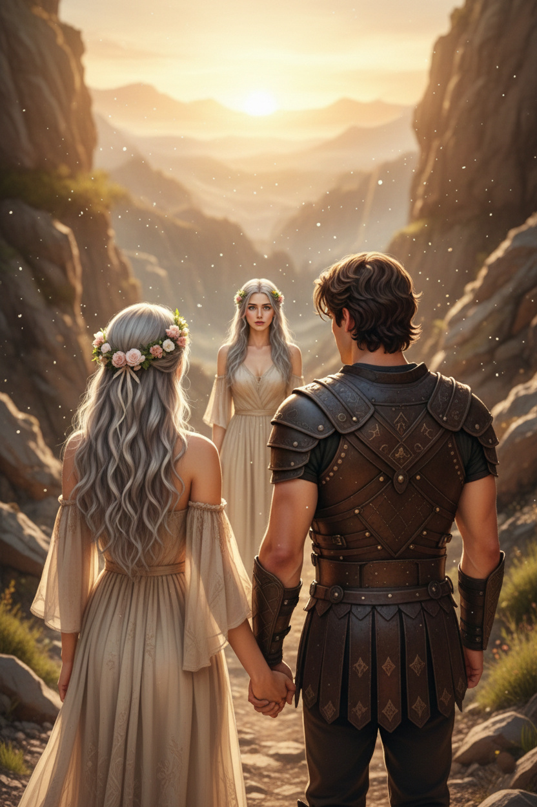
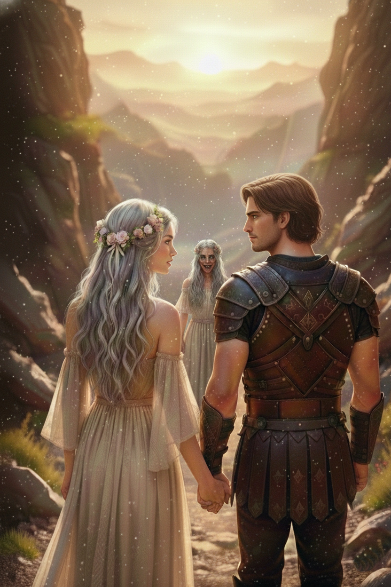
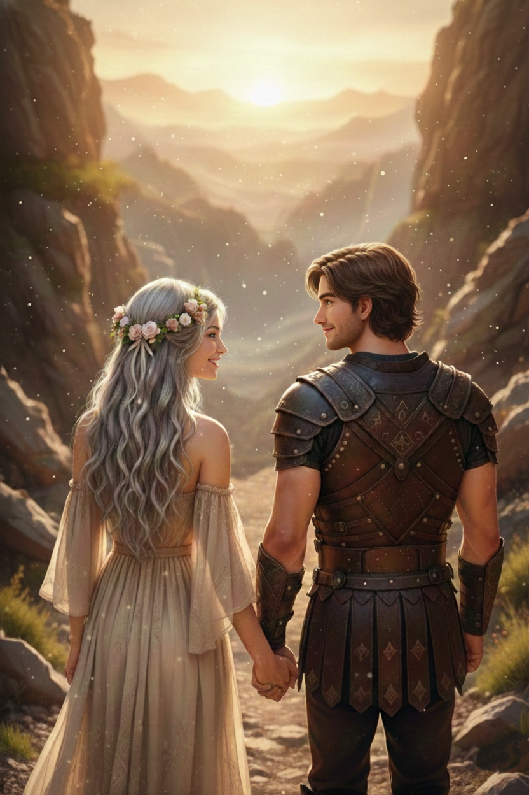

Ajánlom egy kedves barátomnak, aki keresi a pillanatban rejlő örökkévalóságot, és mer hinni a szív órájának szavában.
Ahogy kiléptek az Ős-Fa gyökerei közül, a levegő hirtelen megváltozott körülöttük – a nedves, földszagú pára helyét átvette egy száraz, szinte tapintható csendesség, mintha a világ minden lélegzete megállt volna. Az Ős-Fa hatalmas, csavart gyökerei, amelyek addig szorosan fonták körül őket, mint egy élő börtön rácsai, most hátrahúzódtak, recsegve és nyikorogva, mintha vonakodva engednék el foglyaikat. Honóra érezte, ahogy a szíve hevesebben ver, a fa ereiben lüktető időszag még mindig beleragadt a ruhájába, de most valami más várt rájuk: a Végtelen Horizont fogadta őket. Itt a talaj sötétkék üvegnek tűnt, sima és csillogó, mintha egy óriási, repedezett tükör darabja lenne, amelyben a lépteik halkan visszhangoztak, de nem törtek meg – minden mozdulatuk végtelenül nyúlt el, mintha a föld maga nyelt volna el mindent, ami mögöttük maradt. Az égen pedig a nap mellett ott ragyogtak a csillagok is, mozdulatlanul, mint egy égi térkép pontjai; a nap aranyló fénye furcsán keveredett a csillagok hideg, ezüstös szikrázásával, létrehozva egy olyan alkonyatot, ami sosem sötétedett el igazán, hanem örökösen függött a nappal és az éjszaka határán, ahol az idő mintha kifolyt volna a világból. Ám a horizont nem volt üres – ott, a távolságban, ahol a kék üveg találkozott az ég boltozatával, egy árnyék kezdett kibontakozni, lassan, szinte észrevehetetlenül, mint egy folt a tökéletesen sima felületen.
Egy alak állt előttük, aki kísértetiesen emlékeztetett Honórára – a hasonlóság olyan mély volt, hogy Honóra egy pillanatra megdermedt, mintha saját tükröződését látná, de torzítva, üresen. Ugyanolyan finom vonásai voltak, ugyanolyan ezüstös haja, ami most nem hullámzott a szélben, hanem mereven simult a vállára, mintha minden szálát precízen megfésülte volna egy láthatatlan kéz. De a mozdulatai gépiesek voltak, minden lépés egy pontos, számított kattintás, mintha belső rugók hajtották volna, amelyek sosem fáradnak el, de soha sem éreznek semmit; a szemei pedig nem csillogtak, hanem úgy festettek, mint két üres óraszámlap, ahol a mutatók örökké a tizenkettőn álltak, várva egy soha el nem érkező pillanatot. Ő volt a Múlt Hírnöke, egy visszhang, akit az Idő-szövők küldtek – nem élő lény, hanem egy szövött árny, amit a múlt szálaiból raktak össze, hogy emlékeztesse őket arra, ami elveszett, és arra, ami soha nem lehetett valódi.

– Hiba – szólalt meg a Hírnök, és a hangja olyan volt, mint százezer ketyegő óra egyszerre; a szavak nem hullámzottak a levegőben, hanem vibráltak, mélyen a csontokig hatolva, mintha minden egyes szó egy kis mechanikus szívdobbanás lett volna, ami szinkronban tartja a világ rendjét. – A rendet megzavartad. A lineáris léted fertőzés. Vissza kell térned a Szivárvány-tóhoz, hogy a hurok újra bezárulhasson.
Alerion a tőre markolatára tette a kezét, az ujjak automatikusan szorultak a hideg fémre, ami eddig megnyugtató súllyal pihent az oldalán, de most mintha könnyebb lett volna, mintha a Hírnök jelenléte elszívta volna belőle az erőt; érezte, hogy a Hírnök jelenlétében a levegő megfagy körülöttük. Nem hideg volt ez, hanem a mozgás hiánya – a részecskék lelassultak, a por szemcséi lebegtek mozdulatlanul, Honóra haja szálai sem rezdültek meg, és Alerion szíve ütései mintha egy lassított ritmusban vertek volna, mintha az idő maga kezdte volna elszívni a jelen pillanatokat, hogy a múlthoz láncolja őket.
– Ő nem hiba, és nem tárgy, amit vissza lehet tenni a polcra – lépett előre Alerion, a hangja rekedten tört meg a csendben, de a szemei égtek a haragtól, miközben próbálta eltakarni Honórát a saját testével, mintha puszta akaratával megvédhetné őt ettől a hideg, számító tekintettől. – Ő szabad.
A Hírnök rá sem nézett a lovagra, a feje még csak meg sem fordult, mintha Alerion csupán egy átmeneti árnyék lenne, egy zaj a mechanizmusban, ami nem érdemli meg a figyelmet. Csak Honórát figyelte, a üres szemei fúródtak bele, mintha a lelke mélyére keresné a repedéseket, ahol a hurok még mindig húzogatná a szálakat. – Szabadság? A szabadság csak a pusztulás előszobája. A lineáris időben megöregszel. Megbetegszel. Elveszíted őt – mutatott a Hírnök Alerionra, a karja kinyúlt egy precíz, szinte robotikus mozdulattal, az ujjai hosszúak és vékonyak, mint a tűk, amelyek a sors szálait varrják vissza. – A hurokban örökké szerethetted volna. Harminc nap, végtelenszer. Ott sosem kellene búcsúznod.
Honóra érezte a kísértést – egy édes, fullasztó vonzást, ami nem a testét, hanem a lelkének mélyebb rétegeit markolta meg, mintha régi emlékek elevenedtek volna meg, finom, szinte észrevehetetlen szálakkal tekeredve a szívveréséhez. A Hírnök nem hazudott: az emberi élet, amit választott, végponttal rendelkezett, egy sötét, elmosódott határral, ahol a nevetés elnémul, a érintések elhalványulnak, és a világ színei kifakulnak, mint egy régi festmény az idő vasfoga alatt. A fájdalom és a veszteség lehetősége ott vibrált minden egyes másodpercben, amit Alerion mellett töltött, mint egy halk, állandó zúgás a fülében, egy árnyék, ami a vállára nehezedik, emlékeztetve arra, hogy minden pillanat ajándék, de ugyanakkor lopás is a jövőtől, ahol a szerelem talán egyedül folytatódik, üresen és visszhangosan.
– Miért választanád a törékenyt a tökéletes helyett? – kérdezte a Hírnök, a hangja most már nem csupán ketyegő órák kórusa volt, hanem valami mélyebb, hipnotikus ritmus, ami beszivárgott a gondolataikba, finoman megkérdőjelezve minden döntést, amit eddig hoztak. Egy lassú mozdulattal felemelte a kezét, az ujjai kecsesen íveltek előre, mintha egy láthatatlan fonalat húzna elő a semmiből, a bőrük halványan derengve a csillagfényben. A levegőben egy apró, fekete hurok kezdett formálódni, ami mágnesként vonzotta magához Honóra lényét – nem durva erővel, hanem csábítóan, ígérve a régi biztonságot, ahol a harminc nap mint tökéletes gyöngysor perlekedtek egymásba, és a hurok lassan forgott, sötét peremeitől finom remegés indult el a levegőben, mintha a világ maga kezdte volna elhajolni felé, elnyelve a jelenlétük minden élességét.
Honóra hátrált egyet, a sötétkék üveg a talaj alatt halkan megreccsent, mintha a lépése egy törékeny egyensúlyt zavart volna meg, a szíve hevesen kalapált, de aztán eszébe jutott a Tiszta Valóság Mezeje – nem csak a név, mint egy távoli álom, hanem a durva, tüskés fűszálak érzése a tenyerében, a föld nyirkos illata az eső után, a szél surrogása, ami valóban változtatott a tájképen, nem ismételgette örökké ugyanazt a képet. Eszébe jutott a vér a térdén és a száraz kenyér íze – az a keserédes, ropogós morzsa, amit Alerion osztott meg vele egy tűzrakásnál, ahol a lángok tánca nem volt előre megírt koreográfia, hanem kaotikus, élő játék, tele váratlan szikrákkal és hamuval, ami a bőrükre szállt, emlékeztetve arra, hogy az élet nem sima felület, hanem érdes, tapintható valóság.
– Azért – mondta Honóra, és a hangja most már nem remegett, hanem kibontakozott belőle, mint egy szárny, amit eddig visszatartott a félelem, erős és tisztán csengő a megfagyott levegőben –, mert a tökéletességnek nincs illata. A hurokban a szerelmem nem nőtt, csak ismétlődött, mint egy végtelenül tekeredő szalag, ahol minden csók ugyanazt az ízt hordozta, minden nevetés ugyanazt a visszhangot, de soha nem mélyült el, soha nem változott a reggeli fényben vagy a viharos éjszakában. Olyan volt, mint egy festmény: szép, de élettelen, ahol a színek ragyognak, de nem változnak meg a napszaktól függően, ahol a vonalak tökéletesek, de hidegek, mint a vászon alá festett árnyékok. Én pedig élni akarok, még akkor is, ha a végén meg kell halnom – és a szavak kimondásával érezte, hogyan árad szét benne egy meleg hullám, elmosva a kísértet maradékát, helyet adva a jövő nyitott, ijesztő, de hívogató terének.
A Hírnök arca eltorzult – a finom vonások hirtelen megfeszültek, mintha egy belső rugó pattant volna el, az ezüstös hajszálak enyhén megborzolódtak egy láthatatlan szeletől, és a szemei, azok az üres óraszámlapok, egy pillanatra felvillantak, mintha valami idegenszerű érzelmi szikra próbálna áttörni a mechanikus héjon.

– Akkor kényszerítelek.
A fekete hurok tágulni kezdett, és elnyelte a fényt – a peremei lassan kinyúltak, mint sötét karok, amelyek a csillagokat és a nap sugarait szívták magukba, a levegő hűvös sötétséggel telt meg, ahol a hangok tompán tompultak, és a világ színei elszürkültek, mintha egy függöny ereszkedne le a valóság elé, fenyegetve azzal, hogy mindent visszahúz a ismétlődés unalmas ölelésébe. Alerion rájött, hogy fizikai erővel nem győzhet egy ilyen entitás ellen – a keze önkéntelenül a tőre markolatához kapott, de érezte annak hasztalanságát, a fém hidegségét, ami most csak egy emlék volt a régi, vérrel festett csatákról; itt újra a logikára volt szükség, de egy olyanra, ami felülírja az idő törvényeit, ami nem a pengék, hanem a gondolatok élességével vág a rendszer gyökerébe, ahol a paradoxon maga lesz a fegyver, ami szétzúzza a rendet.
– Állj meg! – kiáltotta Alerion, a hangja élesen hasított a növekvő sötétségbe, mint egy villámhasadás, ami megvilágítja a vihar előtti csendet, a szavak ereje szinte láthatóan remegtetve a hurok peremét. – Ha őt visszaviszed a hurokba, a hurok megsemmisül.
A Hírnök megtorpant – a mozdulata félbeszakadt, a fekete hurok egy pillanatra megdermedt a levegőben, peremei remegve álltak meg, mintha a parancs egy láthatatlan láncot dobott volna rá, a teste pedig enyhén megbillent, mint egy óra, amelynek a mutatója hirtelen megakad.
– Lehetetlen. A hurok az örökkévalóság.
– Nem – vágott vissza Alerion, miközben az elméje villámgyorsan dolgozott, gondolatok szövődtek benne, mint finom szálak egy hálóból, emlékezve minden részletre, amit Honóra mesélt a hurok törékeny egyensúlyáról, a harminc napok merev kereteiről, ahol a változás maga volt a tiltott gyümölcs. – A hurok alapja az állandóság, a tökéletes ismétlődés, ahol minden elem a helyén marad, mint fogaskerekek egy óraszerkezetben. De Honóra már megváltozott – magával vitte az emlékezetet, a tapasztalatot és a jövő iránti vágyat, azokat a magokat, amelyek most benne gyökereznek, mint idegen növények egy gondozott kertben. Ha beteszed őt a harmincadik napba, ő már nem fog ugyanúgy reagálni: a csókokban keresni fogja az új ízeket, a nevetésben a váratlan fordulatot, a naplementében a holnap ígéretét. A változó elem szétfeszíti a rendszert, mint egy repedés a kristályon, ami onnan indulva terjed szét minden irányba. A hurok paradoxonba kerül és összeomlik – a saját logikája szerint, mert az állandóságot nem lehet megfertőzni változással anélkül, hogy az egész szerkezet össze nem omlana. Te nem megmenteni akarod a rendet, hanem a pusztulását hozod el vele, egy végzetes hibával, amit az Idő-szövők soha nem terveztek!
A Hírnök óraszámlap-szemei vadul pörögni kezdtek – a mutatók őrülten forogtak, kattogva és csikorogva, mintha a belső mechanizmus túlterhelődött volna, képtelen feldolgozni a logika ezt a csavarját, ami ellentmondott minden programozott ismétlődésnek, a fogaskerekek pedig egyre gyorsabban zúgtak, felverve egy kaotikus zajt, ami a levegőt töltötte meg. A logika, amit Alerion elé tárt, feldolgozhatatlan volt egy olyan lénynek, aki csak ismétlődésekben tudott gondolkodni – ez nem pusztán ellentmondás volt, hanem vírus, ami belülről marta szét a szerkezetet, ahol minden egyes fordulat mélyítette a hibát, amíg a paradoxon súlya alatt a Hírnök alakja vibrálni kezdett, majd repedezni, finom vonások mentén hasadva szét, mint egy óra, amelynek a burka megreped a túl nagy nyomás alatt.
– A változás... nem... megengedett... – dadogta a Hírnök, a szavak most már töredezett ketyegésként szakadoztak szét, a teste remegve omlott szét részekre, de a teste már szilánkokra hullott, pont úgy, mint a Tükörváros üvegfalai – éles, csillogó töredékekre, amelyek halkan csilingelve potyogtak a sötétkék talajra, ott feküdt mozdulatlanul, mint egy legyőzött mechanizmus roncsa, ahol a fény most már szabadon táncolt a törött felületeken, jelezve a győzelmet a változás nevében.
Ahogy az árnyék elpárolgott, a Végtelen Horizonton újra kisütött a nap – a sugarak hirtelen áradtak szét, meleg aranyló hullámokban, felolvasztva a maradék hideget, a csillagok pedig lassan visszahúzódtak az égre, mint álomfoszlányok a hajnal fényében, helyreállítva a világ természetes ritmusát. Honóra mélyet lélegzett, és érezte, ahogy a belső "hurok", ami eddig a múltjához kötötte, végleg elszakad – nem hirtelen szakadással, ami fájna, hanem finom, szinte észrevehetetlen elengedéssel, mintha egy régi seb hege halványulna el, hagyva helyette friss, szabad légzést, ahol a szívverése most először szinkronban ver a világ változó lüktetésével.

– Megmentettél – suttogta Alerionnak, a keze önkéntelenül keresve az övét, ujjai összefonódva a lovag erős, meleg tenyerével, ahol az érintés most már nem csak emlék, hanem ígéret a közös útra. – Nem a kardoddal, hanem azzal, hogy érted a lelkem működését, a rejtett szálait, amiket még én sem láttam tisztán.
– Én csak kimondtam az igazságot – felelte a lovag, a hangja lágyan simult a szélbe, a szemeiben pedig ott csillogott az a csendes büszkeség, ami a harcok után jön, de most nem vérrel, hanem szavakkal nyert. – Te már nem az vagy, akit elvittek onnan – te vagy a változás maga, aki új hurkokat sző, de ezúttal a saját kezeddel, végtelen lehetőségekkel.